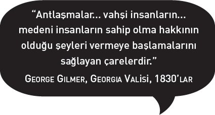

Mantığa vurulmuş saçmalıklardan hoşlanan biri bir keresinde uzmanları, "Hep daha azı, daha azı hakkında hep daha çok, daha çok şey öğrenen, bilen insanlar; sonunda hiçbir şey hakkında her şeyi bilirler," diye tanımlamıştı. Birçok hayvan son derece uzmanlaşmıştır, bedenleri özgül ekolojik yaşam ortamlarına ve tazlarına uyarlanmıştır. Oysa kısa vadede getirdiği ödüller olsa da uzmanlaşma uzun vadede evrimsel bir çıkmazla son bulabilir. Kılıç dişli kedinin avı öldüğünde, kedi de ölmüştü.
Modern insan hayvanı (fiziksel varlığımız) bir genellemecidir. Bedenlerimizde uzun sivri dişler, pençeler ya da zehir yok. Onların yerine aletler ve silahlar geliştirmişiz: bıçaklar, mızrak uçları, zehirli oklar. Sıcak tutacak giysiler ve suda yol almamızı sağlayan basit araçlar gibi temel icatlar, son buz devrinin sonu gelmeden gezegenin tamamını dolaşmamızı mümkün kılmış.[1] Bizim uzmanlaştığımız nokta beyin. Beynin kültür dolayımıyla doğayla etkileşimlerinin esnekliği, başarımızın anahtarı olmuştur. Kültürler yeni tehditlere ve ihtiyaçlara genlerden daha çabuk adapte olabilirler.
İnsanların Amerika kıtalarında yerleşik hayata geçmiş tahmine göre 15.000 yıl önce değil, çok daha öncesinde başladığına dair kanıtlar artmaktadır. Bu yolculukta, buzlanma sırasında Bering Boğazı üzerinden, karadan ilerleyen yolların yanı sıra, adalar arasında yolculuğa, sahiller boyunca seyretmeye yarayan araçların da kullanılmış olması olasıdır.
Ama önceki bölümde ileri sürdüğüm üzere hâlâ bir risk bulunuyor. Kültürler daha incelikli hale gelir, teknolojiler daha güçlenirken hantal uzmanlıklara dönüşebilirler, saldırılara açık ve uç vakalarda ölümcül olabilirler. Atom bombası, ok ve kurşundan sonraki mantıksal ilerleme, türümüzün tamamının sonunu getirmekle tehdit eden ilk teknoloji olmuştu. Benim "ilerleme tuzağı" dediğim şey budur. Ama daha basit teknolojiler de geçmişteki, ta Taş Devri'ndeki toplumları bile baştan çıkarıp onları mahvoluşa sürüklemiştir.
Önceki bölümde Paul Gauguin'in 1897 tarihli Nereden Geliyoruz? Neyiz? Nereye Gidiyoruz? başlıklı tablosunda sorduğu üç soruyu gündeme getirmiştim. Pratik bir düzeyde antropoloji ilk iki soruyu cevaplamıştır: Afrika'da 5 milyon yıl önce yaşamış şempanzelerin uzak akrabaları olduğumuzu artık biliyoruz. Aynı atalardan gelen bugünkü şempanzeler akrabalarımızdır, atalarımız değil. Şempanzeler ve gorillerle aramızdaki tek farklılık, son 3 milyon yıl içinde bizim doğa tarafından giderek daha az, kültür tarafından daha çok şekillendirilmiş olmamızdır. Kendi kendimizin yaptığı deneysel yaratıklar haline geldik.
Bu deney daha önce hiç denenmedi. Bizler, onu bilmeden yapanlar, hiç kontrol etmedik. Deney şimdi çok hızlı ve çok büyük bir ölçekte ilerliyor. 1900'lerin başından bu yana dünyanın nüfusu dörde katlandı, ekonomisi (insanın doğa üzerindeki yükünün kaba ölçüsü) ise kırk kattan fazla büyüdü. Deneyi akılcı bir kontrol altına almamızın, bugünkü ve olası tehlikelere karşı hazır olmamızın gerektiği bir noktaya geldik. Her şey tamamen bize bakıyor. Başarısız olursak (biyosferi uçurur ya da niteliklerini zayıflatır, bizi artık destekleyemeyeceği bir duruma getirirsek) doğa sadece omuzlarını silkecek, şempanzelerin laboratuvarın başına geçmesine izin vermenin bir süreliğine eğlenceli, ama sonuçta berbat bir fikir olduğu sonucuna varacaktır.
Bugüne kadar o kadar fazla türün son bulmasına yol açtık ki, dünya üzerindeki egemenliğimiz fosil kayıtlarında bir asteroidin Dünya'ya çarpmasının sonucuymuş gibi görünecek. Şimdiye kadar, dinozorların hakkından gelen asteroidin yanında yalnızca küçük bir asteroid gibi duruyoruz.[2] Ama türlerin son bulması daha uzun bir süre boyunca devam ederse ya da kitle imha silahlarını ortaya çıkarırsak (büyük güçlerin devasa depolarında duran gerçek kitle imha silahlarını kastediyorum) bir sonraki fosil tabakasında gerçekten de bu gezegenin hayatında büyük bir kesinti olduğu görülecektir.
Önceki bölümde tarih gibi tarih öncesinin de bize kazananın iyi çocuklar olmadığını, en iyi ihtimalle birçok acımasız zaferin, en kötü ihtimalle de soykırımın vârisleri olduğumuzu göstermeye çalıştım. Kendilerine rakip insan gruplarını tekrar tekrar ortadan kaldırmış insanların soyundan geliyor olabiliriz pekâlâ, bu eylemlerin zirve noktası 30.000 yıl önce Neandertal kuzenlerimizin şaibeli bir biçimde ortadan kalkmasıydı. Bu olayın ardındaki hakikat ne olursa olsun, Üst Paleolitik dönemin, Eski Taş Çağı'nın üç döneminin en sonuncusu ve kısasının, toplamın yüzde biri uzunluğundaki devrin başlangıcı olmuştu.
Bu bölümde ilk ilerleme tuzağından (Eski Taş Çağı'nın son bulmasına neden olan avlanmanın mükemmelleştirilmesinden) neler çıkarabileceğimizi, bu tuzaktan çiftçiliğin icat olmasıyla kaçmamızın en büyük deneyimize, dünya çapında medeniyete nasıl yol açtığını görmek istiyorum. Sonra kendimize, aciliyet taşıyan şu soruyu sormamız gerekiyor: Medeniyetin kendisi de daha büyük bir başka tuzak olabilir mi acaba?
ESKİ TAŞ ÇAĞI aşağı yukarı 3 milyon yıl önce, insanlığa doğru kamburlarını çıkarmış vaziyette ilerleyen ilk kaba hayvanların yaptığı ilk kaba aletlerle başlamış, yalnızca 12.000 yıl önce, büyük buz kitlelerinin kutuplara ve bir sonraki iklim değişikliğini bekledikleri yerlere son kez çekilmeleriyle birlikte son bulmuştu. Jeolojik olarak ifade edecek olursak, 3 milyon yıl yalnızca bir göz açıp kapayıncaya kadar geçen süredir, Dünya gününün bir dakikasıdır. Ama insanlar açısından Eski Taş Çağı, zamanda derin bir uçurumdur, varoluşumuzun yüzde 99,5'ini kapsar, oradan sürüne sürüne çıkıp da medeniyetin yumuşak yataklarına ancak dün tırmandık.
Bizim bugün ait olduğumuz alt türümüz, Homo sapiens sapiens bile en eski medeniyetten on ila 20 kat yaşlıdır. Ama öznel insan deneyimiyle, bireysel hayatların toplamı olarak ölçüldüğünde başka çağlarda olduğundan çok daha fazla insan medeni bir hayat yaşamıştır.[3] Medeniyet zamanda derinlere inmez ama yayılır, çünkü henüz rayına oturtulmamış bir nüfus patlamasının hem nedeni hem sonucudur.
"Medeniyet" ve "kültür"ü teknik, antropolojik bir biçimde tanımladığımı açıkça belirtmem gerekir. Kültür derken bir toplumun bilgisi, inançları ve pratiklerinin tümünü kastediyorum. Kültür her şeydir: Veganlıktan yamyamlığa, Beethoven'dan Botticelli'ye ve piercing'e; yatak odasında, banyoda, tercih ettiğiniz (kültürünüz bir kilise tercih etmenize izin veriyorsa) kilisede ne yaptığınızdan tutun, taş parçacıklarından atom parçacıklarına kadar teknolojinin tamamına varıncaya kadar her şey. Medeniyetler kültürün belli bir türüdür: Bitkilerin, hayvanların ve insanların ehlileştirilmesine dayanan geniş, karmaşık toplumlardır.[4] Medeniyetler yapıları itibarıyla farklılık gösterebilirler, ama genelde kasabaları, şehirleri, hükümetleri, toplumsal sınıfları, uzmanlaşmış meslekleri vardır. Bütün medeniyetler kültürdür ya da kültür topluluklarıdır, ama bütün kültürler medeniyet değildir.
Arkeologlar, ilk medeniyetlerin her ikisi de MÖ 3000 yılında ortaya çıkmış (güney Mezopotamya'da, yani bugünkü Irak'ta kurulmuş) Sümer ve Mısır medeniyetleri olduğunda hemfikirdir. MÖ 1000 yılına gelindiğinde medeniyet başta Hindistan, Çin, Meksika, Peru ve Avrupa'nın bazı kısımları olmak üzere Dünya'nın etrafında bir halka oluşturmuştu.
Antik devirlerden bugüne varıncaya kadar medeni insanlar kendilerinin yaygın tabirle vahşilerden daha iyi davrandıklarına, daha iyi olduklarına inanmışlardır. Ama medeniyete iliştirilen ahlaki değerler yanıltıcıdır: Genellikle daha güçsüz başka toplumlara saldırmayı, onlara hâkim olmayı haklı çıkarmakta kullanılmışlardır. İmparatorluklarının görkemli olduğu günlerde Fransızların bir "medenileştirme misyonu" vardı, İngilizler "beyaz adamın yükü"nü taşıyordu, otomatik silahlar bu yükü taşımalarını kolaylaştırıyordu. Hilaire Beloc'un 1898'de yazdığı üzere: "Ne olursa olsun, bizim / Maxim tüfeğimiz vardı / Onların yoktu." Bugünlerde Washington "medeni dünya"nın başını çektiğini, onu koruduğunu ileri sürüyor, Amerikan retoriğinde o ülkenin ilk sakinlerinin köklerinden sökülüp imha edilmesiyle başlamış bir gelenek bu.[5]
Üçte ikimiz insanlığın son binde birlik diliminde yaşadı, bunların da beşte ya da altıda biri şimdi yaşıyor.
Roma sirki, Azteklerin kurbanları, Engizisyon ateşleri, Nazi ölüm kampları, hepsi de son derece medeni toplumların işleriydi.[6] Yalnızca 20. yüzyılda çoğu sivil en az 100 milyon kişi savaşlarda ölmüştür.[7] Vahşiler bundan daha beterini yapmamışlardır. Colosseum'un ve toplama kampının kapısında medeniyetin kendisinin ahlaki ilerlemenin garantörü olduğu umudunu bir kenara bırakmaktan başka bir seçeneğimiz yok.

Mahatma Gandi, 1930'larda Hindistan'ın kendi kendisini yönetmesiyle ilgili görüşmelerde bulunmak üzere İngiltere'ye geldiğinde bir gazeteci ona Batı medeniyeti hakkında ne düşündüğünü sormuştu. Londra'nın kenar mahallelerini, gecekondu yerleşimlerini yenice ziyaret etmiş olan Gandi, "Bence çok iyi bir fikir olurdu," diye cevaplamıştı onu.[8] Medeniyet hakkındaki sözlerim bazen çok sert geliyorsa bunun nedeni, Gandi gibi benim de onun vaatlerini gerçekleştirmesini, başarılı olmasını istememdir. Kayalar içindeki bir barınak yerine bir evde yaşamayı yeğlerim. Büyük binaları ve iyi kitapları severim. Kendimin bir şempanze olduğunu, dünyanın yuvarlak olduğunu, güneşin bir yıldız, yıldızların da güneşler olduğunu bilmekten, "kaos ve eski gece"yle binlerce yıllık mücadelenin sonunda zaten bilir hale geldiğimiz bu şeyleri bilmekten memnunum.[9] Bütün zalimliklerine rağmen medeniyet değerlidir, sürdürmeye değer bir deneydir. Ama tekinsizdir de: İlerleme merdiveninde tırmanırken, önceki basamakları aşağı ittik. Felakete sürüklenmeksizin aşağı inmemiz söz konusu değil. Medeniyeti sevmeyenler, onun o küstah yüzünün üstüne düşmesini bekleyenler, bugünkü sayılarımız ve varlığımızla insanlığı ayakta tutmanın başka bir yolu olmadığını akıllarında tutmalılar.
1825'te Buhar Çağı'nın arifesinde dünya nüfusu yaklaşık bir milyardı; sanayi medeniyeti çökecek olursa ayakta tutulabilir nüfus aynı seviyeye düşecektir. Daha açık bir deyişle söyleyecek olursak milyarlarca insan ölecektir.
ESKİ TAŞ ÇAĞI ARTIK o kadar uzak görünüyor ki bir "Far Side" karikatürü gördüğümüzde kıkırdamak dışında aklımıza pek gelmiyor. Ama o çağ, daha yeni bitti, İsa'nın doğuşundan ve Roma İmparatorluğu'ndan itibaren altı kere daha bir o kadar geriye gitmemiz bizi Eski Taş Çağı'nın bitimine getirmeye yeter. O kadar yeni bitti ki mağaradan çıktığımızdan beri gerçekleşen değişikliklerin hepsi de fiziksel değil, kültürel değişiklikler oldu. Bu da demek oluyor ki kültür ve teknoloji birikimsel olsalar da doğuştan gelen zekânın birikimsel bir niteliği yoktur.[10]
Dr. Johnson'ın genç yakalanırsa bir İskoç'tan çok şey yapılabileceği yolundaki nükteli sözlerinde olduğu gibi, geç Paleolitik dönemde bir kamp ateşinin başından kaçırılıp bizim aramızda büyütülen bir çocuğun, astrofizik ya da bilgisayar bilimlerinde derece sahibi olması şansı bizimle aynı olurdu. Bilgisayar alanından bir benzetme yapalım: En son 50.000 yıl ya da daha önce güncellenmiş bir donanım üzerinde yirmi birinci yüzyıl yazılımı çalıştırıyoruz. Bu durum haberlerde gördüğümüz şeyleri epeyce açıklayabilir.
Bu benzersiz insani sorunu kültürün kendisi yaratmıştır, kısmen kültürel gelişim evrimden hızlı ilerlediği, artık uzunca bir süredir katlanarak büyüyen kültür kitlesi doğal seçilimi engellediği ve kaderimizi bizim ellerimize bıraktığı için böyle olmuştur.
William Golding, konusu İkinci Dünya Savaşı sırasında geçse de Taş Çağı romanı Inheritors'da başladığı insanlık üzerine düşünümlerine devam ettiği, 1956 tarihli romanı Pincher Martin'de "İnsan neymiş sana söyleyeyim," der: "Rahimden çıkarılıvermiş, doğal gelişiminden yoksun bırakılmış, tüysüz bir deri parçasına sarılıp dünyaya salıverilmiş, dişlerine pek az yeri ve baloncuk gibi yumuşak, şişkin bir kafatası olan bir fetüs işte, bir hilkat garibesi... Ama doğa o kafatasının içinde bir muhallebi karar..."[11]
Golding'in bahsettiği muhallebinin malzemesi çoktu: deha ve delilik, mantık ve inanç, içgüdü ve halüsinasyon, şefkat ve zalimlik, aşk, nefret, seks, sanat, açgözlülük; hayata ve ölüme götüren bütün itkiler. Bireyde bunların toplamı kişiliktir, toplumdaysa adına kültür denilen kolektif kişiliktir. Uzun vadede kültür muhallebisinin boyutları her zaman artmıştır. Birkaç kez de ansızın taşıverip mutfağın her tarafını batırdığı olmuştur.
Bunların ilki, hayatta kalmanın dengesini kuvvetli bir biçimde bizden yana eğen bir gelişmeydi, Homo erectus'un ateşi kontrol altına almasıydı. Ondan sonraki, yarım yüzyıl sonra Cro Magnonların Neandertalleri yerlerinden etmelerinden kısa bir süre sonra avlanmayı mükemmelleştirmeleri oldu. Yeni silahlar üretildi: daha hafif, daha keskin, daha uzun erimli, daha zarif ve daha ölümcüllerdi.[12] Boncuk süslemeleri, kemik oymaları, müzik aletleri, incelikle düzenlenmiş gömme törenleri yaygınlaştı. Mağara duvarlarında, kayaların yüzeylerinde Rönesans'a kadar bir daha hiç görülmeyecek kuvvetli bir doğalcılıkla yapılmış devasa resimler belirdi.
Bu şeylerin birçoğunu Neandertaller ve daha önceki Cro Magnonlar küçük ölçekte zaten yapmışlardı,[13] bu yüzden de bu sanat ve teknoloji patlaması (bazılarının iddia ettiği üzere) birden yepyeni bilişsel güçlere sahip yeni bir türe evrildiğimizin kanıtı olarak kullanılamaz. Ama bunlar tanıdık bir kültürel kalıbın kanıtıdırlar: Gıdanın fazla olmasından doğan boş zaman. Avcılar ve toplayıcılar sırf geçinebilecekleri kadarından fazlasını üretiyorlar, kendilerine duvarları boyayacak, boncuk ve heykeller yapacak, müzik çalacak, dini ritüellere gömülecek zaman yaratıyorlardı. İlk kez insanlar zenginleşmişlerdi.
UZUNLUKLARI VE KARMAŞIK YÖNLERİ İTİBARIYLA birbirinden çok farklı, birbiriyle bağlantısı iki dönem arasında kabaca bir karşılaştırma yapacak olursak, Eski Taş Çağı'nın bitimiyle geçen beş yüz yıl içinde Batı'nın "keşifleri" ve fetihleri arasında bir benzerlik olduğunu söyleyebiliriz. 1492'den bu yana bir tek medeniyet (Avrupa medeniyeti) diğer bütün medeniyetleri ortadan kaldırıp yerinden etmiş, bu süreçte şişkinleşmiş ve kendisini endüstriyel bir güç haline getirmiştir (bir sonraki bölümde bu konuya döneceğim). Üst Paleolitik Çağ'da bir tek insan türü (Cro Magnon, yani Homo sapiens[14]) çoğalmış ve tüm dünyaya yayılmış, başka bütün insan çeşitlerini öldürmüş, yerinden etmiş ya da kendi içine katmış, o zamanlar insan eli değmemiş yeni dünyalara girmiştir.
En geç 15.000 yıl öncesine gelindiğinde (buzların geri çekilmesinden çok önceye) insanoğlu Antarktika dışında bütün kıtalarda yerleşiklik kazanmıştı. Avrupa'nın dünya çapında yayılması gibi tarih öncesi bu keşif ve göç dalgasının çok köklü ekolojik sonuçları oldu. İnsanın yeni topraklarda boy göstermesinden kısa bir süre sonra büyük av hayvanları ortadan kaybolmaya başladı. Mamutlar ve tüylü gergedanlar kuzeye çekildiler, sonra da Avrupa'dan ve Asya'dan silinip gittiler. Avustralya'da devasa bir kanguru, başka keseliler, bir Volkswagen kadar büyük bir kaplumbağa kayboldu. Amerika kıtalarında develer, mamut, devasa bizon, devasa tembel hayvan, at silinip gitti.[15] Homo sapiens, dünya üzerinden ardında kesif bir tükenme kokusu bırakarak geçiyordu.
Bundan yalnızca atalarımızın sorumlu tutulması gerektiği konusunda bütün uzmanlar fikir birliği içinde değildir. İnsanları savunanlar Afrika, Asya ve Avrupa'da bir milyonu aşkın yıl boyunca avlandığımıza, ama hiçbir şeyin sonunu getirmediğimize, bu tükenmelerin birçoğunun büyük iklim değişikliklerine denk geldiğinde, Buz Devri'nin ansızın bitmiş olabileceğine, bu yüzden de büyük hayvanların uyum sağlayamamamış ya da göç edememiş olabileceğine dikkat çekiyorlar. Bunlar güzel itirazlardır, bu gibi itirazları tamamen bir kenara bırakmak akılsızlık olur. Gelgelelim benim kanım, atalarımızın aleyhindeki kanıtların ağır bastığı yönünde. Hiç kuşkusuz buzların erimesi hayvanlar üzerinde büyük bir baskı yaratmıştı, ama daha önce benzer birçok ısınmadan sağ salim çıkmışlardı. İlk insanların (Homo erectus, Neandertaller ve ilk Homo sapiens) tükenmelerine neden olmaksızın büyük av hayvanlarını avladığı da doğrudur. Ama Üst Paleolitik Çağ insanları kendilerinden öncekilerden daha donanımlı, sayıca daha fazlalardı ve öldürdüler mi çok daha büyük ölçekte öldürüyorlardı.[16] Kıyım yaptıkları bazı yerler neredeyse sanayi ölçeğindeydi: birinde bin mamut, birinde 100.000'den fazla at bulunmuştu.[17] Antropolog William Howells 1960'ta "Neandertaller av takibi konusunda kesinlikle becerikli ve yiğitlerdi, ama geride böyle devasa kemik yığınları bırakmamışlardı," diye yazıyordu.[18] Ian Tattersall da kısa bir süre önce ekolojik ahlaka dikkat çekmiştir: "Tıpkı bizim gibi, Cro Magnon'un da karanlık bir tarafı olsa gerektir."[19]
Bu dur durak bilmez avcılar sarp topraklarda koca koca sürüleri yarlardan aşağı sürüyorlar, hayvan yığınlarını çürümeye bırakıyorlardı, bu Alberta'da Kafa Ezen Buffalo Atlayışı gibi yerlerde tarihin kayıt altına aldığı çağlarda da sürmüş uygulamadır. Bizon talihliydi, büyük düzlüklerde yarların sayısı azdı. Ama beyaz adamının tüfekleri hiçbir sınır tanımıyordu, buffalo da kızılderililer de on dokuzuncu yüzyılda 40-50 yıl içinde tükenme noktasına gelecekti. Herman Melville şöyle yazıyordu: "Daha kırk yıl önce kambur buffalo sürüleri, on binlerce buffalo Illinois ve Missouri çayırlarına yayılmışlardı... bugün kibar emlakçının size bir santimetrekaresi bir dolara arazi satmaya çalıştığı topraklara."[20] Bir santimetrekaresi bir dolara arazi: İşte şimdi medeniyet budur.
Amazon yerlileri, Avustralya yerlileri, İnuitler, Kalahari yerlileri gibi bugünkü avcı-toplayıcılar ekolojilerinin bilge bekçileridir, kendi sayılarını sınırlamışlar, yere hafif basmışlardır.[21] Genelde kadim avcıların da onlar kadar bilge olduğu varsayılır. Ama arkeolojik kanıtlar bu görüşü desteklemiyor. Paleolitik avcılık, başlıca geçim kaynağıydı, görünürde sınırsız bir dünyanın en zengin ortamlarında yapılıyordu. Yaygın kalıntılardan çıkarsamamız gerektiği üzere borsa simsarının iyimserliğiyle, bir sonraki tepenin ardında başka bir büyük av olacağı beklentisiyle yapılıyordu. En son ve en iyi belgelenmiş kitlesel tükenişlere göre (Yeni Zelanda ve Madagaskar'da uçamayan kuşların ve başka hayvanların kaybolması) insanların suçlanması gerektiği konusunda kuşkuya kapılmaya mahal yoktur.[22] Avustralyalı biyolog Tim Flannery insanlar için "gelecek yiyiciler" demişti. Her tükeniş, bir olasılığın ölümüdür.[23]
Bu yüzden kendimiz hakkında bilmemiz gereken şeyler arasında şu da var: Pekâlâ bir soykırımla başlamış olabilecek Üst Paleolitik Çağ, vahşi hayattan öldürebildiğin kadarı tarzı bir barbeküyle son bulmuş olabilir. Avlanmanın mükemmelleştirilmesi bir hayat tarzı olarak avlanmanın sonunu getirmiştir. Kolay et, daha fazla bebek anlamına geliyordu. Daha fazla bebek daha fazla avcı demekti. Bu dönemde dünya çapındaki büyük insan göçlerinin çoğunun itici gücü, hareketli ziyafetlerimizle toprağı iflasa sürüklediğimizden ihtiyaç olmuş olsa gerektir.
Batı Avrupa'nın arkeolojisi Paleolitik Çağ'ın son bin yılında Cro Magnonların şaşaalı hayat tarzlarının sönmekte olduğunu göstermektedir. Mağara resimlerinde kesintiler olur, sonra bu resimler son bulur. Heykeller ve oymalar azalır. Çakmak taşı bıçaklar giderek küçülür, küçülür. Mamut öldürmek yerine tavşanları nişan almışlardır.
Muzip Çek yazar Karel Çapek 1930'larda yazdığı "Hantal İnsanlara Övgü" adlı denemesinde şu gözlemde bulunmuştu: "Çok kötü avcılar olan bireylerin doğmaya başlamasıyla birlikte insan yalnızca avcı olmayı bıraktı." Bir zamanlar birinin Wagner'in müziği için söylediği gibi Çapek'in sözleri de kulağa geldiğinden daha iyi. Eski Taş Çağı'nın sonundaki avcılar kesinlikle hantal değillerdi, ama kötülerdi çünkü sağduyulu bir asalağın uyması gereken kuralı çiğnemişlerdi: Ev sahibini öldürme. Türleri peş peşe tükenişe sürüklerlerken ilk ilerleme tuzağına adım atmışlardı.
Onların soylarından gelenlerin bazıları (yakın döneme kadar varlıklarını sürdüren avcı-toplayıcı toplumlar) ağır darbelerin okulunda kendilerini kısıtlamayı öğreneceklerdi. Ama geri kalanlarımız bahisleri yükseltmenin yeni bir yolunu buldu: Geriye dönüp baktığımızda Çiftçilik ya da Neolitik "Devrim" diye bilinen şeyi.
AVCILAR ARASINDA HER ZAMAN çok sayıda avcı olmayan olmuştu: Toplayıcılar. Birçoğunun kadınlar ve çocuklar olduğunu sanıyoruz, iyi işleyen bir mağaranın yemek listesindeki yabani meyveler ve sebzelerden sorumluydular. Av hayvanları tükenip giderken toplayıcıların gıda tedarikine katkıları da daha önemli olmaya başladı.
Mezolitik Çağ ya da Orta Taş Çağı olarak bilinen bu kısa, keskin dönemin insanları her şeyi denediler: Nehir ağızlarında ya da bataklıklarda yaşadılar, sahilleri taradılar, kökleri söktüler, ufacık tohumlar bulabilmek için yabani otları biçtiler, bu sonuncusu muazzam sonuçları olacak bir uygulamaydı. Bu otların bazıları o kadar zengindi ki, kullanılmaları o kadar fazla emek gerektiriyordu ki kilit bölgelerde daha çiftçilik başlamadan yerleşik köyler belirmişti.[24] Toplayıcılar kazara saçılan ya da düşürülen tohumların ertesi yıl filizlendiğini fark etmeye başladılar. Sonra yabani alanlara bakıp onları genişleterek ürün miktarını etkilemeye başladılar, en kolay toplanan ve en dolgun ürünleri ekiyorlardı.
Bu gibi deneyler nihayetinde tam anlamıyla tarıma ve değişmez birkaç ürüne neredeyse tam anlamıyla bağımlı olmaya yol açacaktı, ama ona daha birkaç bin yıl vardı; ilk zamanlarda, bitkilere bakanlar yine esasen toplayıcılardı, vahşi hayvanlar ve bulabildikleri balıkların yanı sıra çok geniş bir bitki örtüsünü tüketiyorlardı. Söz gelimi Şili'de Monte Verde'de 13.000 yıl önce ahşap dikdörtgen kulübelerden oluşan daimi bir köy vardı, devegillerden hayvanların, küçük av hayvanlarının ve kısa süre sonra nesli tükenecek mastodonun avlanmasıyla ayakta duruyordu bu köy; ama kalıntılarında patates kabuklarının yanı sıra birçok yabani sebze de bulunmuştu.[25] Monte Verde Amerika kıtalarındaki ilk insan yerleşimlerinden biri olmakla birlikte, yerel bitkilere dair olgun ve yakından bir bilgi birikimi olduğunu gösterir, bu bitkilerin bazıları nihayetinde And medeniyetinin kurucu tahılları haline geleceklerdi.
BİZİ DİĞER BÜYÜK ŞEMPANZELERDEN AYIRAN küçük değişikliklerin birikmesi gibi Çiftçilik Devrimi de bilinçsizce girişilen bir deneydi, onu başlatanların bırakın nereye varacağını bu devrimin bile farkında olamayacağı kadar ağır gelişiyordu. Ama önceki gelişmelerle kıyaslandığında aşırı derecede hızlı gelişmişti.
Bize bizim hakkımızda bir şeyler söylediği için son derece önemli olan bir başka nokta da bir değil, birçok devrim olmasıdır. Avustralya dışındaki bütün kıtalarda çiftçilik deneyleri, buzların hükümranlığının sona ermesinden hemen sonra başlamıştı.[26] Daha eski kitaplarda (ve bazı yeni kitaplarda)[27] Ortadoğu'nun, yani Bereketli Hilal'in önemi vurgulanır, bu bölge o zamanlarda Akdeniz kıyılarından Anadolu platosuna ve Irak'ın alüvyonlu düzlüklerine uzanıyordu. Ekmeğe dayalı bütün medeniyetlerin esas yapıtaşları, bize buğday, arpa, koyun ve keçileri veren bu bölgeden çıkmıştır.
Ortadoğu'nun dünyada tarımın, birbirinden bağımsız olarak hemen hemen aynı tarihlerde geliştiği en azından dört büyük bölgeden biri olduğu bugün artık açıklık kazanmıştır. Diğerleri pirinç ve darının başlıca ürünler haline geldiği Uzakdoğu; medeniyeti mısır, fasulye, balkabağı, horozibiği ve domatese dayanan Orta Amerika (Meksika ve Orta Amerika'da komşu olduğu diğer bölgeler); birçok patates türü, başka yumru köklü bitki türleri, balkabağı, pamuk, fıstık ve quinoa gibi yüksek proteinli tahıllar geliştirmiş olan Güney Amerika'nın And Dağları bölgesidir.[28] Bütün bu bölgelerde tahılların ehlileştirilmesi 8000 yıl öncesiyle 10.000 yıl öncesi arasında gerçekleşmiştir.[29] Bu dört bölgenin yanı sıra kurucu niteliği daha az yaklaşık bir düzine başka bölge bulunuyordu: Güneydoğu Asya, Etiyopya, Amazon, Kuzey Amerika'nın doğusu gibi, bu bölgeler bize sırasıyla muzu, kahveyi, manyoku ve ayçiçeğini kazandırmıştır.[30] Birbirleriyle bağlantısı olmayan insanlar bazen aynı bitkileri geliştirmişlerdir: Pamuk ve fıstık aynı anda hem Yeni hem Eski Dünya'da geliştirilmiştir.
Hayvanların ehlileştirilmesini belgelemek güçtür, ama insanlar tahılları geliştirdikleri tarihlerde bazı otoburlar ve kuşların takip edilip, çevrilip sürdürülebilir bir hızda öldürülebileceklerini öğrendiler. Kuşaklar boyunca bu hayvanlar iki ayaklı seri katilin her yerde onları takip ettiğini kafaya takmayacak kadar ehlileştiler ve zihnen sönük hale geldiler. Toplayıcılık bahçıvanlığa dönüşürken avlanma da çobanlık halini aldı.
Koyunlar ve keçiler Ortadoğu'da yaklaşık olarak MÖ 8000 yılında ehlileştirilen ilk hayvanlar oldular. Ehlileştirilmiş devegiller (lamanın ve alpakanın yenmenin yanı sıra taşımada ve yünleri için kullanılan ilk biçimleri) Peru'da MÖ 6000 civarında ortaya çıktı, hemen hemen aynı tarihlerde Avrasya'da da ehlileştirilmiş sığırlar görüldü, ama devegillerin de sığırların da sütleri sağılmıyordu. Eşekler ve atlar yaklaşık olarak MÖ 4000 yılında ehlileştirildiler. Köpekler, domuzlar ve kediler gibi artıklar, döküntüler karşılığında ve tahılların yol açtığı fare patlaması yüzünden insan yerleşimlerinin çevresinde takılmaya uzun zamandır istekli olmuşlardı. Paleolitik Çağ'da avlanmak için ehlileştirilmiş olabilecek köpekler dünyanın her yerinde insan gruplarıyla birlikte bulunmuşlardır. Soğuk havalarda bazen yatakları ısıtmak için kullanılıyorlardı. Kore ve Meksika gibi bazı yerlerde özel bazı cinsler etleri için besleniyordu. Tavuk Albay Sanders'ın kursağına doğru yolculuğuna, Asya ormanlarında yaşayan muhteşem tüylerle süslü bir kümes hayvanı olarak başladı, Meksika ise hindiyi ehlileştirdi. Perulular lama ve alpakanın yanı sıra muscovy ördeklerini ve küçük ama çok üreyen bir tür olan gine domuzunu da ehlileştirdiler, hatta gine domuzu bir sömürge dönemi resminde İsa'nın Son Yemeği'nde sofradaki yiyecekler arasında bir rölyef olarak bile belirdi.[31]
Gine domuzu ve chihuahua'ların yenmesinin de düşündürdüğü üzere Amerika kıtalarında ehlileştirilebilir hayvanların sayısı Eski Dünya'ya nazaran daha azdı. Ama Yeni Dünya bu durumu daha yaygın ve daha üretken bir bitki yelpazesi geliştirerek telafi etti. Yalnızca Peru'da kırk büyük tür bulunuyordu.[32] Bu gibi bitkiler nihayetinde Amerika kıtalarındaki büyük yerli şehirleri destekleyecek, birkaçı da Eski Dünya'da üretilmeye başlandıklarında oranın beslenme biçimini ve ekonomisini dönüştüreceklerdi. Bu meseleyi son bölümde tartışacağım.
Gıda tedariki daha öngörülebilir hale geldiğinde, nüfus da artıyordu. Hareketli avcı-toplayıcıların tersine yerleşik insanların çocuk sayısını kısıtlamak için bir gerekçeleri yoktu, çocuklar tarla ve ev işlerinde işe yarıyordu. Vücutta yağ düzeyinin daha yüksek olması, hayvan sütü ve tahıllı bebek mamaları sayesinde bebekleri erkenden sütten kesmeleri nedeniyle kadınların üreme oranı yükselme eğilimi gösteriyordu. Çiftçilerin sayısı kısa süre sonra avcı-toplayıcıların sayısını aştı, onları kendi içlerine kattılar, öldürdüler ya da çevredeki "yaban"ın içine sürdüler.
Üst Paleolitik Çağ'ın başlangıcında, bizim bugünkü alt türümüzün adil bir biçimde ya da hilelerle dünyanın mirasçıları olarak ortaya çıktığı tarihlerde insanlar olarak sayımız epi topu bir milyonun üçte biri kadardı.[33] 10.000 yıl öncesine gelindiğinde, tarımın arefesinde, yerleşilebilir bütün kıtalara yerleşilmesi sonrasında sayımız 3 milyona çıkmıştı; 5000 yıl öncesine gelindiğinde kurucu bölgelerin hepsinde çiftçiliğin yerleştiği, Sümer ve Mısır'da tam anlamıyla medeniyetin ortaya çıktığı tarihlerde sayımız dünya çapında 15 ila 20 milyonu bulmuş olsa gerektir.
Bu gibi rakamlar yalnızca bilgiye dayalı tahminlerdir, biraz önce söylediğim başka her şey tabii ki her şeyin aşırı yalınlaştırılmış bir biçimidir. Tam zamanlı çiftçiliğe geçilmesi bin yıllar aldı, ilk rakamlar her zaman ümit verici değildi, Ortadoğu gibi kilit bir bölgede bile. MÖ 8000'de Neolitik Eriha yalnızca 16 dönümdü,[34] 40 dönüm haline gelmesi 1500 yıl sürdü.[35] Türkiye'de bulunan Çatalhöyük yerleşimi, MÖ 7000 ile 5500 arasında Bereketli Hilal'deki en büyük yerleşimdi, yalnızca 130 dönümlük bir alana yayılıyordu, sakinleri de proteinlerinin büyük bölümünü yabani av hayvanlarından sağlıyordu. Kırsal kesimde yaşayan herhangi bir Kanadalının bilebileceği üzere avlanma eğlenceli ve harcanan çabaya değer bir faaliyet olduğu yerlerde çiftçiler arasında sürer, bu durum özellikle ehlileştirilmiş hayvanların az olduğu Amerika kıtaları ve Asya'nın bazı kesimleri açısından geçerlidir. Yine de büyüme hızı ivme kazanmıştır. Ama bundan yaklaşık 5000 yıl önce insanoğullarının büyük bölümü yabani yiyeceklerden ehlileştirilmiş gıdaya geçmişti.
SONUÇLARININ BÜYÜKLÜĞÜ BAKIMINDAN, çiftçiliğe rakip çıkabilecek bir başka icat yoktur (1940'lardan bu yana hepimizi öldürebilecek silahların icat edilmesi dışında). İnsanın meslek hayatı ikiye ayrılır: Neolitik Derimi'nden önceki her şey ve ondan sonraki her şey. Üç Taş Devri (Eski, Orta ve Yeni) bir kümeye aitlermiş gibi görünseler de değillerdir. Yeni Taş Devri'nin sonraki çağlarla ortak yönleri, kendisinden önce milyonlarca yıl süren taş alet çağlarıyla ortak yönlerinden daha fazladır. Çiftçilik devrimi tam anlamıyla yepyeni bir geçim tarzı başlatmıştı, bu geçim tarzı bugüne kadar dünya ekonomisinin temeli olmayı sürdürdü. Geç Taş Devri'nin gıda teknolojisi bugün onsuz yapamayacağımız tek teknolojidir. Yaklaşık bir düzine kadim halkın tahılları, bugün dünya üzerinde 6 milyar insanı besliyor. İki yüzyılı aşkın bir süredir devam eden bilimsel tahıl yetiştiriciliğine, 1960'ların yaygın tabirle yeşil devrimine ve 1990'ların genetik mühendisliğine rağmen tarih öncesi çağlardan bu yana repertuarımıza eklenmiş bir tek yeni ürün yoktur.
Yeni Taş Devri nihayetinde dünyanın bazı bölgelerinde metal işçiliğinin gelişmesine, Avrupa'da Sanayi Devrimi'ne yol açmış olsa da bunlar geçim tarzında temel değişiklikler değil, aynı tema üzerine çeşitlemelerdir. Bu yüzden de Neolitik bir köy bir Bronz ya da Demir Çağı köyüne ya da bugünkü bir Üçüncü Dünya köyüne daha fazla benziyordu.
Victoria döneminde geliştirilen, insanın gelişimini aletlerde kullanılan malzemelere göre sınıflandıran arkeolojik şema Neolitik Çağ'ın ilerisinde işe yaramaz hale gelir. Teknolojinin genellikle toplumsal değişimle bağlantılı olduğu Avrupa'da bu şemanın bir yararı olabilir, ama bizim teknomerkezci kültürümüzün temel olarak gördüğü şeylerin (metal, saban, tekerlek vs.) eksikliğinin dâhiyane bir biçimde telafi edildiği ya da tersine bu şeylerin varlığının hiçbir sonuç doğurmadığı yerlerde neler olduğunu anlamamıza pek yardımcı olmaz.[37] Söz gelimi Mezopotamya tekerleği yaklaşık olarak MÖ 4000'de icat etmiştir, ama onun yakın komşusu Mısır bir 2000 yıl daha tekerleği kullanmamıştır. Matematik ve astronomide klasik Avrupa'ya rakip okuryazar bir medeniyet olan Mayaların klasik döneminde metaller o kadar az kullanılıyordu ki teknik olarak Taş Devri'ndeydiler.[38] Ama tersine Sahara altı Afrika MÖ 500'de demir işçiliğinde ustalaşmıştı (Çin kadar erken bir tarihte), gelgelelim onlar da tam anlamıyla bir medeniyet geliştiremediler.[39] Metal işçiliğinin yaklaşık olarak MÖ 1500'de başladığı Peru'daki İnka medeniyeti dünyanın en geniş ve en yakından yönetilen imparatorluklarından birini yarattı, ama bunu bildiğimiz biçimiyle yazıyı kullanmadan yapmış olabilirler (gerçi kullandıkları quipu sisteminin aslında bir yazı biçimi olduğuna dair kanıtlar artmaktadır).[40] Japonlar başka herkesi geride bırakarak 12.000 yılı aşkın bir süre önce çanak çömlek yaptılar, ama pirinç tarımı ve tam bir medeniyet burada 10.000 yıl daha görülmedi, bunlar topyekün Çin ve Kore'den alındı. Japonlar MÖ 500'e kadar bronz işlemeye başlamadılar, ama on altıncı yüzyıla gelindiğinde çelik kılıçlarıyla nam salmışlardı. O tarihlerde Avrupalıların ateşli silahlarından aldılar, ama sonra bunları 300 yıl boyunca bir kenara bıraktılar.
İşte bu yüzden teknolojik belirlenimciliğe karşı tetikte olmalıyız, çünkü bu yaklaşım kültürel etkenleri hafifsemeye meyleder, insanın adaptasyonuyla ilgili karmaşık soruları basit bir "Bizler tarihin kazananlarıyız, peki o zaman diğerleri neden bizim yaptığımız gibi yapmamış?" sorusuna indirger. Tarım ve medeniyete "icat" ya da "deney" diyoruz, çünkü geriye dönüp baktığımızda öyle görünüyorlar. Ama çoğu insan için tekdüze ve zahmetli bir hayata giden bir yolun baştan çıkarıcı adımlarıyla, kazara başlamışlardı. Çiftçilik nitelik pahasına nicelik sağladı: Daha fazla gıda ve daha fazla insana yol açtı, ama daha iyi beslenilmesini ya da daha iyi hayatlar sürülmesini nadiren sağladı. İnsanlar bir avuç nişastalı kök ve bitki (buğday, arpa, pirinç, patates ve mısır) uğruna geniş bir yabani yiyecekler yelpazesinden vazgeçti. Biz bitkileri ehlileştirirken onlar da bizi ehlileştirdi. Biz olmazsak ölürler, onlar olmazsa da biz ölürüz. Kitlesel bir açlık dışında tarımdan kaçış yoktur, zaten genellikle de kıtlıklar ve afetler yüzünden tarımın yolu oraya çıkmıştır. Zamanın büyük bir bölümü boyunca çoğu insan açlık sınırında yaşamıştır, bugün dünyanın büyük bir bölümü hâlâ o durumda yaşıyor.[41]
AVCI-TOPLAYICI TOPLUMLARDA (birkaç örnek dışında) toplumsal yapı az çok eşitlikçiydi, en büyük ile en küçük arasında zenginlik ve güç bakımından çok küçük farklılıklar söz konusuydu. Liderlik ya yayılmıştı, bir fikir birliği meselesiydi ya da erdemlerle, başkalarına örnek olarak kazanılan bir şeydi. Başarılı bir avcı avının başında oturup oracıkta karnını doyurmuyordu, eti paylaşıyor, böylece saygınlık kazanıyordu. Bir lider zorbalaşırsa ya da bir azınlık çoğunluğun kararını beğenmezse gruptan ayrılabiliyordu. Değişmez sınırların ya da aidiyetlerin olmadığı, kalabalık olmayan bir dünyada insanın tercihini ayaklarıyla kullanması kolaydı.
Son buz çağından sonra dünyanın her yerinde bir düzine çiftçilik merkezinde kurulan ilk şehirler ve köyler bu serbest ve rahat usulleri bir süre sürdürmüş gibi görünüyorlar. Bunların çoğu, herkesin benzer işlerde çalıştığı ve benzer hayat standartlarına sahip olduğu küçük çiftçi topluluklarıydı.[42] Toprak ya topluluğun ortak malıydı ya da tanrılardan başka hiç kimsenin toprağın sahibi olmadığı düşünülüyordu. Çabaları ve becerileriyle zenginleşmiş çiftçilerin aralarında akrabalık ilişkisi olan muhtaçlarla paylaşması bir yükümlülüktü.
Gelgelelim zenginlik ve güç bakımından insanlar arasındaki farklılıklar kök saldı. Nüfuslar artar, gruplar arasındaki sınırlar belirgin hale gelirken özgürlük ve sosyal fırsatlar azaldı. Bu kalıp ilk kez Ortadoğu'daki Neolitik köylerde ortaya çıktı, sonra dünyanın her tarafında tekrarlandı. Söz gelimi Tuna kıyılarındaki ilk çiftçilerden geriye yalnızca aletleri kalmıştı, sonraki yerleşimlerse sağlam bir biçimde tahkim edilmişti ve silah doluydu. Avustralyalı arkeolog Gordon Childe, burada "araziler giderek azalırken, neredeyse herkesin herkesle savaş içinde olma halinin doğmakta olduğunu" gördüğümüzü söyler.[43] Childe, bu sözleri 1942'de, Hitler'in yayılmacı Lebensraum[44] politikasını izlediği yıllarda yazmış olduğundan dünyanın Taş Devri'nden kendisinin yaşadığı devre ne kadar az değiştiğini vurgulamasına gerek yoktu.
Dr. Johnson'ın dediği gibi yurtseverlik gerçekten de "bir alçağın son sığınağı" olabilir, ama aynı zamanda bir tiranın da başvurduğu ilk çaredir. Dışarıdakilerden korkan insanlar kolayca yönlendirilir. Toplumun koruyucusu olduğu varsayılan savaşçı kastı, genellikle savunma şantajcısı haline gelmiştir. Savaş ya da kriz zamanlarında iktidar, güvenlik vaadiyle birkaç kişi tarafından birçoklarının elinden çalınmıştır. Düşman ne kadar ele geçmez ya da hayali olursa, rızanın imali için o kadar elverişli olur. Engizisyon Şeytan'a karşı fanatik bir ticaret yapmıştı.[45] Yirminci yüzyılda kapitalizm ile komünizm arasındaki mücadele de eskinin din savaşlarının bütün izlerini taşıyordu. Bu ikisinden birini ya da diğerini savunmak gerçekten de dünyayı havaya uçurma riskine değiyor muydu?
Bugün dünya çapında bir "terörle savaş" bahanesiyle zar zor kazanılmış özgürlükleri kaybediyoruz, sanki terörizm yeni bir şeymiş gibi. (Yeni olduğunu düşünenler, anarşist intihar bombacılarının üzerlerinde patlayıcılarla Londra'da cirit attığı Gizli Ajan romanını okuyabilirler; Joseph Conrad bu romanı yüzyıl önce yazmıştı.)[46] Öyle anlaşılıyor ki Müslüman fanatik, dinden çıkmışın, anarşistin, özellikle de Soğuk Savaş boyunca askeri bütçelere büyük katkıda bulunmuş Kızıl Tehdit'in yerini almaya layık.
NEOLİTİK DEVRİM, ortaya çıkışıyla ilgili izler nerede bulunursa bulunsun kaçınılmazmış ya da neredeyse kaçınılmazmış gibi görünüyor. Çiftçiliğin keşfine, koşulların tuhaf bir biçimde bir araya gelmesi yol açmış olsaydı yalnızca bir yerde başladığını, oradan her yere yayıldığını ya da çok nadiren ve çok farklı zamanlarda gerçekleştiğini görürdük. Üst Paleolitik Çağ'a (ya da ondan kısa bir süre öncesine)[47] kadar doğa bütün işgüzar şempanzeleri bir tek büyük laboratuvarda, Eski Dünya'da tutmuştur. Ama şempanzeler oradan çıkıp da Yeni Dünya'ya ulaştıklarında, buzların erimesi yüzünden deniz seviyesinin yükselmesi nedeniyle birbirinden büyük ölçüde kopmuş, farklı hammaddelerle dolu iki laboratuvar ortaya çıkmıştı.[48] Laboratuvarların her birindeki bitkiler, hayvanlar, çevreler ve teknolojilerin çok farklı olduğu dikkate alınırsa şaşırtıcı olan şey dünyanın her iki tarafında da ne kadar benzer yolların tutulduğu, sonuçların birbirine ne kadar benzer olduğudur.
On altıncı yüzyılın başında İspanyollar Amerika ana kıtasına ulaştıklarında batı ve doğu yarıkürenin insanları, avları tükenmekte olan Buz Devri avcıları olan atalarının yollarını ayırmalarından beri hiç karşılaşmamışlardı. Colomb öncesinde birkaç temas (Polinezyalılarla, Vikinglerle, muhtemelen Asyalılarla) kurulduğu doğrudur, ama bunlar bitki örtüsünü ve faunayı ya da medeniyetin yükselişini etkileyemeyecek kadar gelip geçici ve çok geç tarihlerde kurulmuş temaslar olmuşlardır. Norveç faresi ve hamamböceği gibi yetkin denizciler bile Colomb'dan öne Amerika'ya ulaşamamışlardı. Çiçek hastalığı gibi Eski Dünya'nın beter salgınları da.[49]
1500'lerin başında olan şey gerçekten de istisnai bir şeydi, daha önce hiç olmamış, bir daha hiç olmayacak bir şey. 15.000 yılı aşkın bir süredir yalıtılmış olarak varlıklarını sürdüren iki kültürel deney nihayet karşı karşıya gelmişti. İlginçtir, onca zaman sonra, ikisi de birbirlerinin kurumlarını görüp tanıyabilmişti. Cortes Meksika'da karaya çıktığında yollar, kanallar, kentler, saraylar, okullar, mahkemeler, pazarlar, sulama tesisatı, krallar, rahipler, tapınaklar, köylüler, zanaatkârlar, ordular, gökbilimciler, tüccarlar, spor, tiyatro, resim, müzik ve kitaplar görmüştü. Yüksek medeniyet ayrıntılarda farklı, ama özde benzer bir biçimde birbirinden bağımsız olarak dünyanın her iki tarafında da gelişmişti.
Sınayıcı bir vaka olarak Amerika örneği, bizlerin öngörülebilir yaratıklar olduğunu, her yerde aynı ihtiyaçların, ihtirasların, umutların, çılgınlıkların güdümünde olduğumuzu düşündürüyor. Başka yerlerde bağımsız olarak devam eden deneyler aynı karmaşıklık düzeyine ulaşmamışlardı, ama birçoğu aynı eğilimleri göstermiştir. Bir ya da iki tekneye doluşmuş insanların soyundan gelenlerin yerleştiği ücra Polinezya adalarında bile toplumsal sınıfların, yoğun çiftçiliğin ve taş abidelerin olduğu minik medeniyetler kurulmuştu.
BİRBİRİNDEN AYRI BU GELİŞMELERİN yalnızca benzerliğiyle değil, eşzamanlılığıyla da karşı karşıya kaldığımızdan kendimize şunu sormamız gerekir: Son buz devrinin son bulmasından önce neden hiçbir yerde hiçbir bitki ehlileştirilmemişti? 20.000 yıl önceki insanlar da 10.000 yıl öncekiler kadar akıllıydılar, hepsi de av etiyle tıka basa dolmuş değildi, ayrıca buz da daha alçak enlemlerde tutunamıyordu.
Bu sorunun olası cevaplarından biri bugün bizi kaygılandıran şeylerden biridir. Tıpkı ağaç halkaları gibi yıllık izler bırakan kadim buz kütlelerini inceleyen iklimbilimciler, çeyrek milyon yıl boyunca ortalama küresel ısının izini sürmeyi başarmışlardır. Bu araştırmalar dünyanın ikliminin geçen 10.000 yıl içinde olağandışı derecede istikrarlı olduğunu göstermektedir, bu süre de tam olarak tarım ve medeniyetin ömrüne denk gelmektedir. Öyle görünüyor ki denemiş olsak bile çiftçiliği daha önce geliştiremezdik. Bu araştırmalar kimi zaman Dünya'nın ikliminin çok şiddetli değişiklikler gösterdiğini, yüzyıllar içinde değil, on yıllar içinde bir buz devrinden çıkabildiğini (ya da buz devrine girebildiğini) göstermektedir.[50]
Bu gibi olayların doğal tetikçilerinin neler olduğu çok iyi anlaşılamamıştır. Bir tür zincirleme tepki, belki okyanus akıntılarının ansızın tersine dönmesi ya da kutuplarda donmuş toprakların erimesiyle metan gazı salımı gibi olaylar hızlı altüst oluşlar yaratmış olabilir. Richard Alley buzdağlarının çekirdekleriyle ilgili araştırmaları konu alan kitabında aşikâr olması gereken şeyi işaret ediyor: "İnsanlar sahip olduğumuz iklime uygun bir medeniyet inşa etmişlerdir. İnsanlık giderek bu iklimin sunduğu her şeyi kullanıyor... ve son birkaç bin yılın iklimi de olabildiğince iyi gidiyor."[51]
Değişiklik bizim çıkarımıza değildir. İzleyebileceğimiz tek akılcı politika değişikliği tetiklemekten kaçınmak olur. Gelgelelim medeniyetin kendisinin, içinde serpilip geliştiği o uzun ılımanlığı fosil yakıt salımları ve başka rahatsızlıklarla bozduğu yönünde elimizde bol bol kanıt mevcut. Her iki kutuptaki buz tabakaları kırılıyor. Andlar ve Himalayalar'daki buzlar eriyor, bazıları yalnızca yirmi beş yıl içinde eriyip gitti.[52] Kuraklık ve olağandışı derecede sıcak hava peş peşe sekiz yıl boyunca dünyanın tahıl üretiminin gerilemesine ya da yerinde saymasına neden oldu. Aynı sekiz yıl içinde beslenmesi gereken insan sayısı 600 milyon daha arttı.
Hızlı ısınma epey kötü sonuçlar doğuracaktır, ama en beteri dünyanın iklim dengesinin birden bozulması, yeniden eski aşırı sıcak, aşırı soğuk düzenine geri dönmesi olur. Eğer böyle olursa her yerde ekinler mahvolur ve medeniyetin büyük deneyi felaketle sonuçlanır. Yiyeceğimiz konusunda, kılıç dişli kedi kadar uzmanlaştık, o yüzden de dış etkilere onun kadar duyarlı hale geldik.